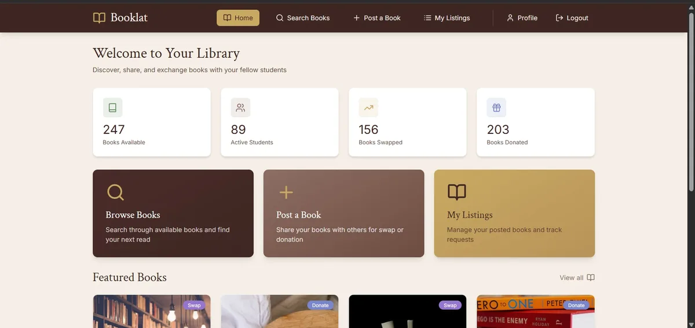
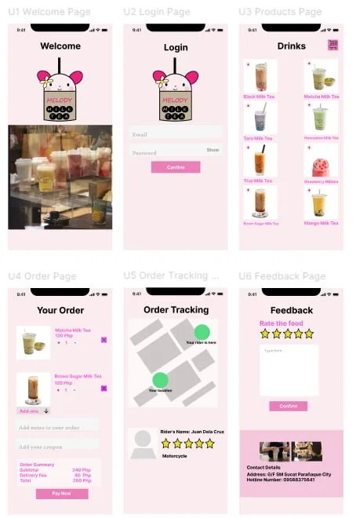
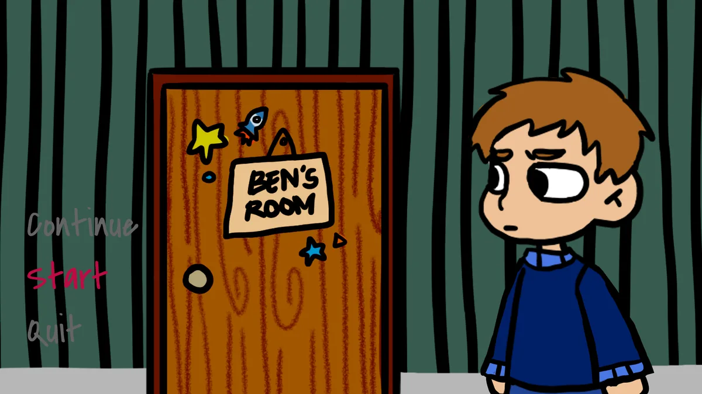
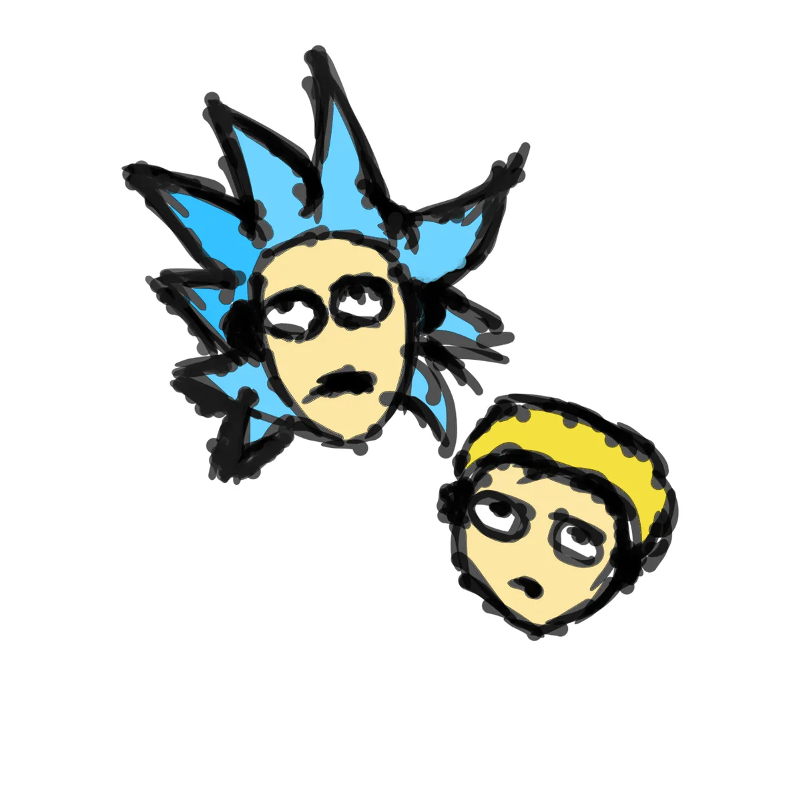
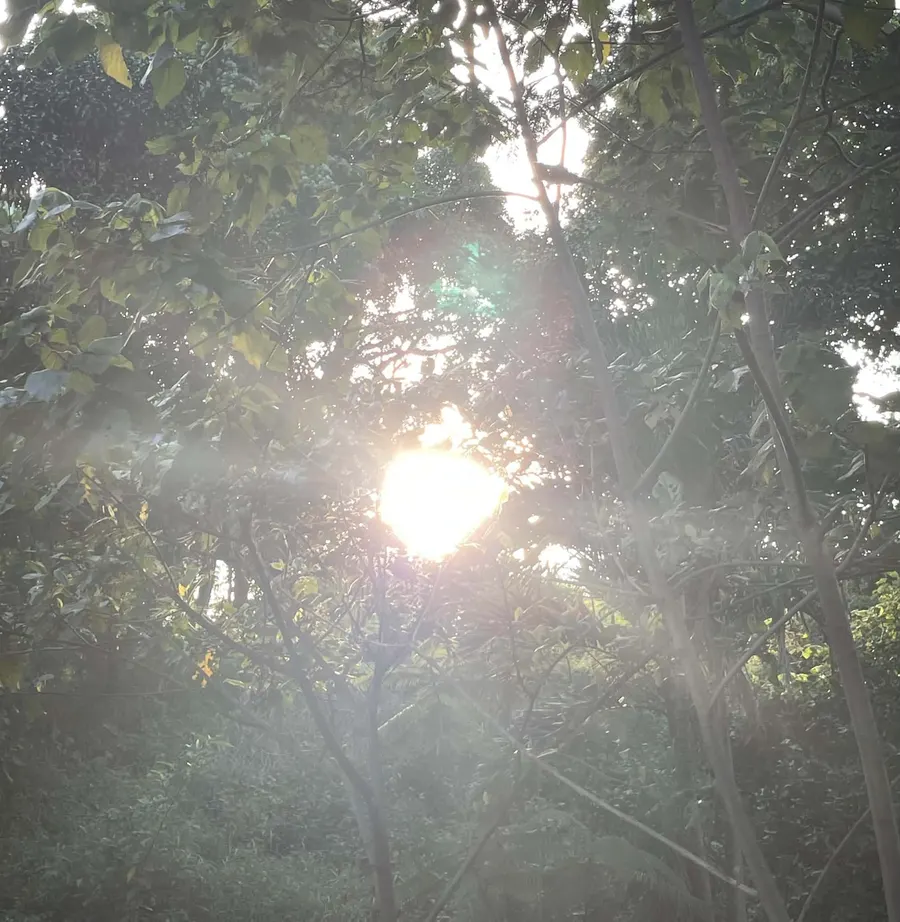
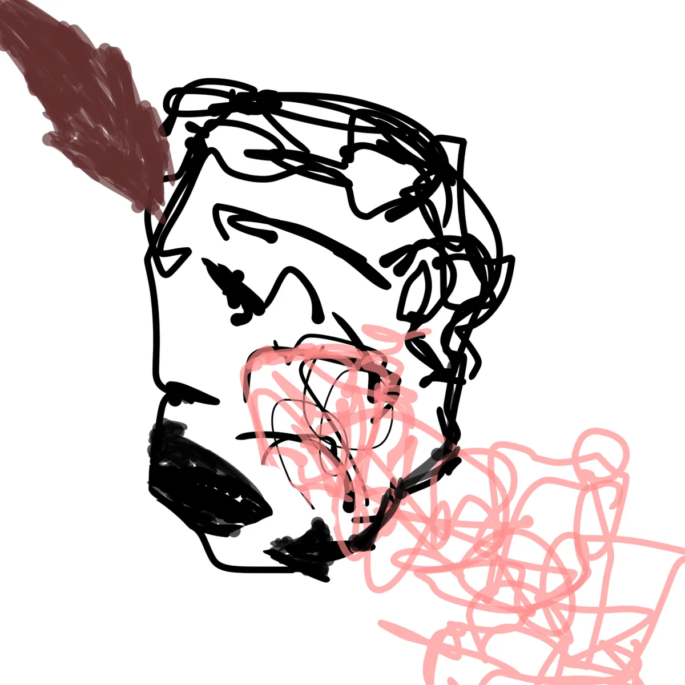
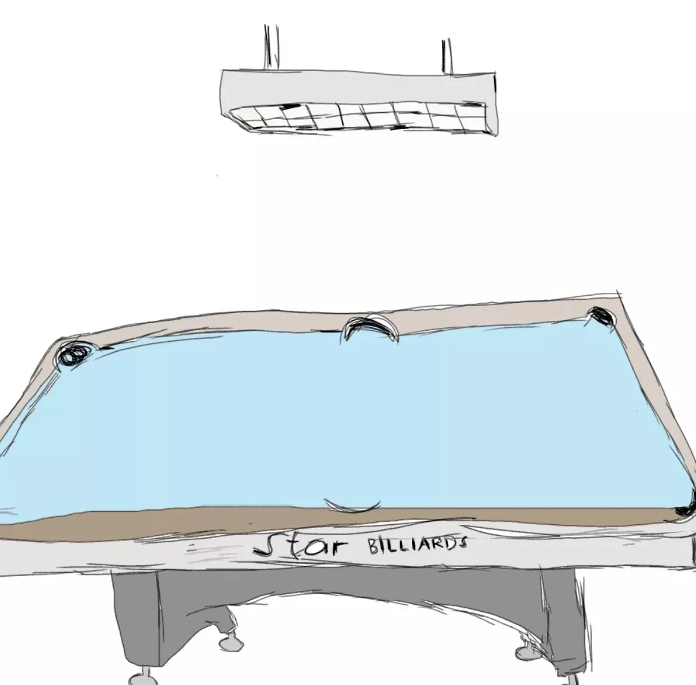
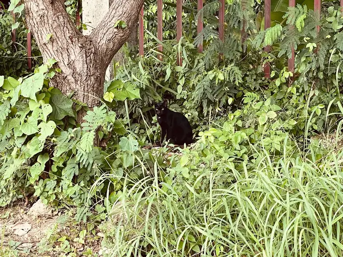

Vince
Makes
Things.
Third-year BSIT student, PUP Open University. Still figuring out which of these things I'm best at — so I'm doing all of them.
Things I've built.
A few things I've actually built.

Booklat
A student-focused book exchange and donation platform designed to make academic resources more accessible. Students can list, exchange, or donate unused books through a simple, organized interface, with student verification built in to keep the community trustworthy. Worked as UI/UX Designer & Prototype Developer — designed the interface and user flows in Figma and built an interactive prototype using Figma Make.

Melody Milktea
A UI/UX wireframe and prototype for a milk tea ordering app, created during TESDA NC III Visual Graphics Design training. Designed the flow and screens in Figma, focused on a simple, approachable ordering experience. Part of learning core visual design and prototyping fundamentals outside of coding.

Ben Dreams
A Godot game made as a school project. Led the project team and managed task distribution, wrote the game's story and narrative, and guided the team through development.
Poetry & writing.
A few poems and short pieces.
In the mood for rain You are the only rain I won't bring my umbrella for For your rain are your tears, and I want to feel it fall through me I am not here to protect myself from cold, I'm here to comfort you
Untitled In blood, forgotten dreams Same mistakes, same old scream Horrors of reality, you're gonna sink But you will never forget your own drink
On Relationships I'm at my 20s, and I think people should stop asking about our relationship status. Some people are simply happy and content with having friends. I guess in today's generation, the main reason why some remain single is because of our self awareness. We are aware of our flaws, insecurities, and what kind of person we can be if we commit to a relationship. If you know someone who doesn't have a significant other, just be with them. Let them be, do not put pressure into them. They might be having the best time of their life, we never know. Some people are just used to being alone. Even without a partner, we could still feel loved, seen, and appreciated.
On Reading When I was younger, I love to read, and I still do, but I don't read that much anymore. I've been busy, but I don't think that's an excuse. I think I should make time for it, because reading helps in different aspects of our lives. Reading can be a way for us to feel. Reading fiction or even non-fiction, can help us exercise our emotions, by reading, we are able to really relate and empathize with the characters. This can be a good outlet for our thoughts, emotions, etc. As a person who loves to create, or just have unlimited thoughts in my head, I feel like reading allows us to be a creative in a way. Like when we read a story that has no definite ending, we are able to think of our own ending. We can also be inspired to write or just do something, because of reading. After reading a book, there's this feeling that makes you want to become somebody or makes you want to do something that has a purpose. With the issues that we are experiencing right now, I do think that we really need to read, we can start with small steps. Reading can help us think critically. By reading, we are able to comprehend what is really happening in the world. We learn to separate the facts from misinformation. So all in all, reading is a superpower. You don't only read for yourself, you read for the world.
Art, doodles, photos.
Things I made or things I kept. Not a professional photography portfolio — just pictures I liked enough to hold onto.





Who's doing this.
I'm still figuring things out. I just like making things and learning whatever catches my attention.
I'm a third-year BSIT student at PUP Open University. Before that, I studied Mobile App and Web Development at STI College Pasay-EDSA. I'd call myself a jack of all trades, master of none — I get interested in something, go deep for a while, and then something else catches my attention. That's not a phase I'm trying to grow out of. It's just how I work.
I work with AI a lot, especially when I'm building or learning something. It helps me move faster and understand things, but I still do the thinking, make the decisions, figure out what I actually want to build, and decide what stays and what doesn't. A lot of what I know also comes from self-study. Back in senior high, I even learned coding by writing code on paper, which sounds funny now, but that's how we did it. I'm still learning and developing my skills.
I love learning about anything that catches my attention. Lately that's meant reading Substack, cooking, and losing hours to Dota 2 (I used to play Teamfight Tactics and reached Master twice). Haruki Murakami is my favorite author, and Nexpo my favorite YouTuber — I've watched basically everything he's made. I think my curiosity and my technical side connect more than people expect: I'm often thinking "what if I could build this?"
I'm not perfect. I don't know everything, and I still make mistakes.
- AI automation & n8n
- REST APIs & webhooks
- OAuth & automation fundamentals
- Zapier
- Web development, generally, always